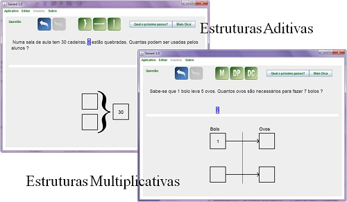
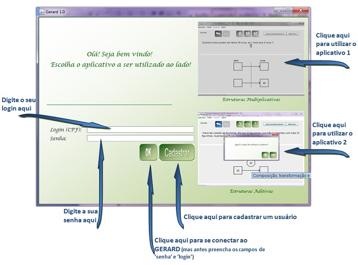
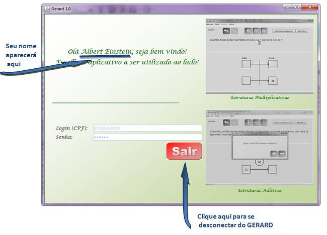
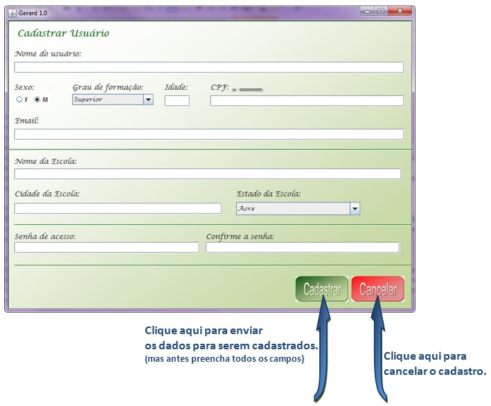
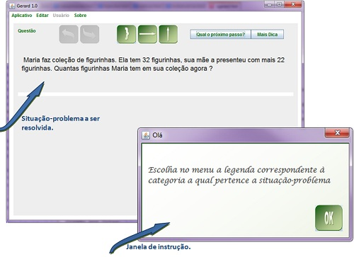
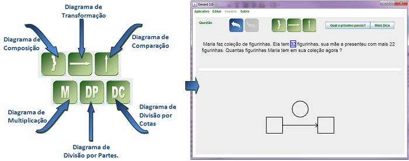
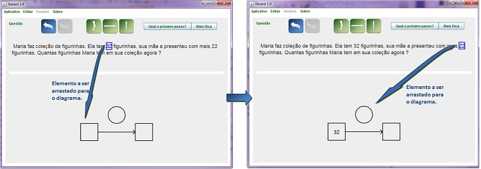
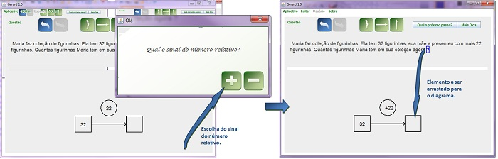
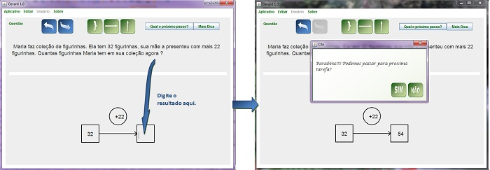
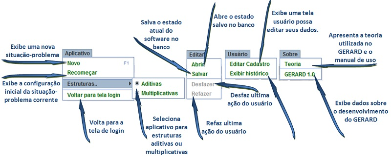

O GERARD foi desenvolvido para o ensino de estruturas aditivas e multiplicativas através da utilização dos diagramas propostos por Gerard Vergnaud.
Como Utilizar o GERARD
1. Se conectaando no GERARD
Ao iniciar o GERARD, é exibida a tela de login. Através desta tela, o usuário terá a opção de escolher qual tipo de aplicativo utilizar, de fazer o login ou de fazer o cadastro.

Observe que para utilizar o GERARD não é necessário ser cadastrado, precisando apenas escolher um dos dois aplicativos. Porém, o usuário que não possui cadastro não tem acesso a algumas funcionalidades do GERARD.
Quando usuário se conectar ao GERARD, será exbida a tela com o seu nome e um botão "sair" caso o usuário deseje se desconectar.

2. Se cadastrando no GERARD
Quando o usuário clicar no botão "cadastrar", será exida a tela cadastro, contendo os campos que deverão ser preenchidos. Observe que é necessário o preenchimento de todos os campos. O login do usuário corresponderá ao seu CPF. É possível editar o cadastro através da opção "editar cadastrado" que será explicada logo mais.

3. Resolvendo situações-problemas no GERARD
Depois que o usuário escolher o aplicativo que deseja utilizar, será exibida uma tela com probleminhas de matemática que devem ser resolvidos utilizando-se os diagramas de Vergnaud.

Para resolver uma situação-problema, o usuário deverá executar os seguintes passos:
Categorizar: O usuário deverá escolher o diagrama que corresponde a situação-problema proposta. Para fazer esta escolha, o usuário deverá clicar em um dos botões verdes.

Compor o diagrama: O usuário deverá arrastar os elementos selecionados pelo GERARD para o lugar correspondente no diagrama.

Atribuir sinal ao número relativo: Quando se tratar de um número relativo, o usuário deverá escolher o sinal correto do número.

Cálculo do resultado: Depois de compor corretamente todo o diagrama, o usuário terá que digitar o valor e teclar "enter". Se o cáluclo estiver correto, uma mensagem de sucesso é exibida.

4. Outras funcioalidades do GERARD
O GERARD possui uma barra de menus com os itens: "Arquivo", "Editar", "Usuário" e "Sobre". Cada um deles possui submenus com funcionalidades especificas e que podem ser acessadas com o clique do mouse.
